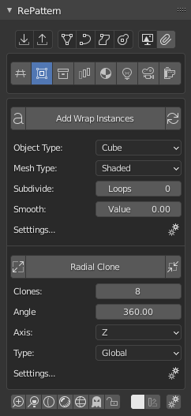

Instances
Key Goals
Add Instances
Wrap Instances -> wrap around default primitives as instances
Wrap Custom -> wrap around custom geometries as instances
Rename -> use custom names for instances
Radial Clone -> create circle of the added geometries
Options
Object Type -> add default primitives as a instances
Mesh Type -> object display
Properties -> each primtive has his own creation properties